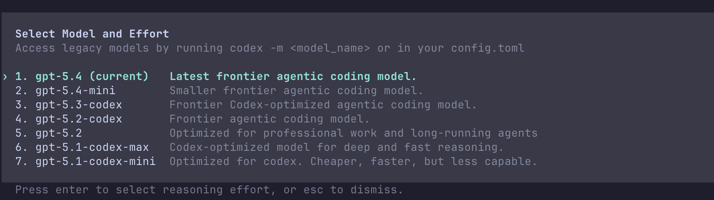

Codex モデル選択
Codex は複数のモデルをサポートしています。各モデルの特徴を理解し、シーンに応じて適切なモデルを選択してください。
デスクトップ版では入力ボックス右下隅で切り替えられます：

Codex CLI は使用できます/modelコマンド切り替え：

利用可能なモデル
Codex は現在以下のモデルをサポートしています：
| モデル | タイプ | 特徴 | 適用シーン |
|---|---|---|---|
| gpt-5.4 | フラッグシップ | 最強の能力、深い推論 | 複雑なタスク、アーキテクチャ設計 |
| gpt-5.4-mini | 軽量 | 高速応答、低コスト | シンプルなタスク、高速イテレーション |
| gpt-5.3-codex | プロフェッショナル | プログラミング最適化、コード特化 | コード作成、バグ修正 |
| gpt-5.3-codex-spark | 高速 | 超高速応答、高頻度インタラクション | リアルタイムコラボレーション、クイックQ&A |
モデルの特徴の詳細
GPT-5.4
フラッグシップモデルは、最強の推論と創造能力を備えています。
| 特徴 | 説明 |
|---|---|
| 推論の深さ | 複雑な問題を深く分析 |
| コンテキスト理解 | 大規模コードベースの構造を理解 |
| マルチステップタスク | 複雑なワークフローを処理 |
| 正確性 | 高精度で、手戻りを削減 |
適用シーン
- アーキテクチャ設計とリファクタリング
- 複雑なバグの分析と修正
- マルチモジュール協調開発
- コードレビューと品質分析
GPT-5.4-mini
軽量モデルは、応答が速く、日常の開発に適しています。
| 特徴 | 説明 |
|---|---|
| 応答速度 | フラッグシップモデルよりも高速 |
| コスト効率 | トークン消費が少ない |
| 日常タスク | 通常の開発操作に適しています |
適用シーン
- 簡単な機能の実装
- コードフォーマットとリファクタリング
- ドキュメント作成
- クイックQ&A
GPT-5.3-Codex
プログラミングタスク専用に最適化されたモデルです。
| 特徴 | 説明 |
|---|---|
| コード特化 | プログラミングタスク専用にトレーニング |
| 言語カバレッジ | 複数のプログラミング言語をサポート |
| コード品質 | 生成されるコードの品質が高い |
適用シーン
- コード作成と生成
- バグ修正とデバッグ
- コードリファクタリング
- テスト作成
GPT-5.3-Codex-Spark
超高速応答モデルで、高頻度インタラクションのシーンに適しています。
| 特徴 | 説明 |
|---|---|
| 超高速応答 | 最速の応答速度 |
| リアルタイムコラボレーション | 対話型開発に適しています |
| Pro 限定 | Pro プランのみ利用可能 |
適用シーン
- リアルタイムコードQ&A
- 迅速なプロトタイプ検証
- 高頻度イテレーション開発
推論強度の設定
モデルの推論強度を調整して、速度と深さのバランスを取ることができます。
推論強度レベル
| レベル | 説明 | 特徴 |
|---|---|---|
minimal | 最小推論 | 最速の応答、シンプルなタスクに適しています |
low | 低推論強度 | 高速だが一定の分析あり |
medium | 中程度の推論 | 速度と深さのバランス（デフォルト） |
high | 高推論強度 | 深い分析、複雑なタスクに適しています |
xhigh | 超高推論 | 最強の推論、最も遅い応答 |
推論強度の設定
推論強度の設定
# CLI 指定
codex --reasoning-effort high
# 設定ファイル
[mycode4 type="toml"]
model_reasoning_effort = "high"
# セッション中に切り替え /model gpt-5.4 --reasoning-effort xhigh
codex --reasoning-effort high
# 設定ファイル
[mycode4 type="toml"]
model_reasoning_effort = "high"
# セッション中に切り替え /model gpt-5.4 --reasoning-effort xhigh
推論サマリー
Codex が推論プロセスを表示する詳細度を制御します。
サマリーモード
| モード | 説明 |
|---|---|
auto | 詳細度を自動決定（デフォルト） |
concise | 簡潔なサマリー |
detailed | 詳細な推論プロセス |
none | 推論サマリーを表示しない |
推論サマリー設定
# ~/.codex/config.toml
model_reasoning_summary = "detailed"
model_reasoning_summary = "detailed"
モデル切り替え
シーンに応じて異なるモデルを切り替えて使用します。
切り替え方法
モデルの切り替え
# CLI スラッシュコマンド
/model gpt-5.4
/model gpt-5.4-mini
/model gpt-5.3-codex
# 推論強度付き
/model gpt-5.4 --reasoning-effort high
# アプリ内で切り替え
モデルセレクターをクリックし、目的のモデルを選択します
/model gpt-5.4
/model gpt-5.4-mini
/model gpt-5.3-codex
# 推論強度付き
/model gpt-5.4 --reasoning-effort high
# アプリ内で切り替え
モデルセレクターをクリックし、目的のモデルを選択します
シーン切り替えの推奨
| シーン | 推奨モデル | 推論強度 |
|---|---|---|
| アーキテクチャ設計 | gpt-5.4 | high/xhigh |
| 複雑なリファクタリング | gpt-5.4 | high |
| バグ修正 | gpt-5.3-codex | medium |
| 日常コーディング | gpt-5.4-mini | low/medium |
| クイックQ&A | gpt-5.4-mini | minimal |
| リアルタイムコラボレーション | gpt-5.3-codex-spark | minimal |
サービス階層
異なるサービス階層を選択すると、応答の優先度に影響します。
サービス階層オプション
| 階層 | 説明 |
|---|---|
flex | エラスティックサービス、応答がやや遅い場合があります（デフォルト） |
fast | 優先サービス、より高速な応答 |
サービス階層設定
# ~/.codex/config.toml
service_tier = "fast"
service_tier = "fast"
モデルとプラン
プランによってモデルのサポートが異なります：
| プラン | 利用可能なモデル |
|---|---|
| Free | 基本モデル |
| Plus | gpt-5.4, gpt-5.4-mini, gpt-5.3-codex |
| Pro | 全モデル + Spark + より高い上限 |
| API Key | トークン従量課金、主流モデルをサポート |
コストの考慮
トークン消費の比較
| モデル | 相対コスト |
|---|---|
| gpt-5.4 | 最高 |
| gpt-5.3-codex | 中高 |
| gpt-5.4-mini | 低め |
| gpt-5.3-codex-spark | 低 |
コスト最適化のアドバイス
- 簡単なタスクには mini または Spark モデルを使用
- 日常開発では medium 推論強度を使用
- 複雑なタスクのときだけフラッグシップモデルと高推論強度を使用
- /compact を使用してコンテキストを圧縮し、トークン消費を削減
ベストプラクティス
モデル選択の原則
- タスクの複雑さに応じてモデルを選択
- 応答速度と推論の深さのバランスを取る
- 複雑なタスクでは正確性を優先
- 高頻度インタラクションでは応答速度を優先
設定の推奨
推奨設定
# 日常開発設定
model = "gpt-5.4-mini"
model_reasoning_effort = "medium"
model_reasoning_summary = "auto"
# 複雑タスクの一時切り替え
# /model gpt-5.4 --reasoning-effort high
model = "gpt-5.4-mini"
model_reasoning_effort = "medium"
model_reasoning_summary = "auto"
# 複雑タスクの一時切り替え
# /model gpt-5.4 --reasoning-effort high
よくある質問
Q: コード作成に最適なモデルはどれですか？
gpt-5.3-codex はプログラミングタスク専用に最適化されており、ほとんどのコード作成シーンに適しています。
Q: 速度と品質のバランスを取るには？
日常タスクでは gpt-5.4-mini + medium 推論強度を使用し、複雑なタスクでは gpt-5.4 + high 推論強度に切り替えます。
Q: Spark モデルにはどのような利点がありますか？
Spark モデルの応答が最も速く、高頻度のインタラクションやリアルタイムコラボレーションに適しています。Pro プランでのみ利用可能です。
Q: 推論強度は結果にどのような影響を与えますか？
より高い推論強度は、Codex がより深い分析を行うことを意味しますが、応答時間は長くなります。
その他の拡張機能